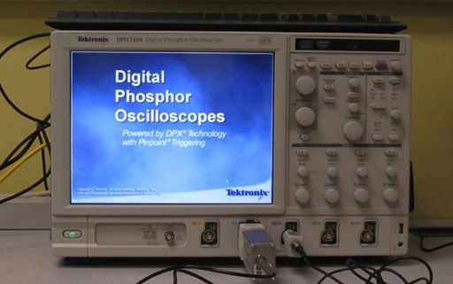
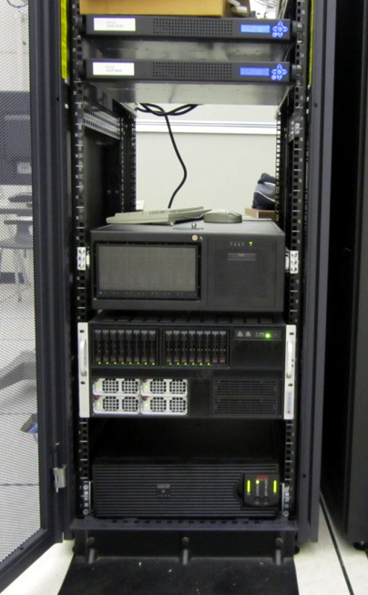

The Natural Science and Engineering Research Council of Canada (NSERC) supported updating equipment of Communication Security Lab in 2005 and 2006.

Our Tektronix DPO 7104 Oscilloscope support 1GHz bandwidth and 20GS/s (single channel), 4 channels, network connectivity, on-screen zoom, and complex triggering capabilities. The Tektronix passive probe P6139A and differential probe P6248 are used to acquire power traces during the operations of cryptographic devices.

Our new SuperServer 5086B-TRF from Supermicro Computer Inc. features 8 x Intel® Xeon® 10-core CPU @ 2.13GHz, 64 x 8GB DDR3 RAM, 14 x Seagate SAS 1TB, and 2 x Tesla C2070 GPUs for high performance cryptographic computations and cryptanalysis.